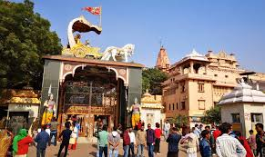
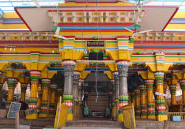
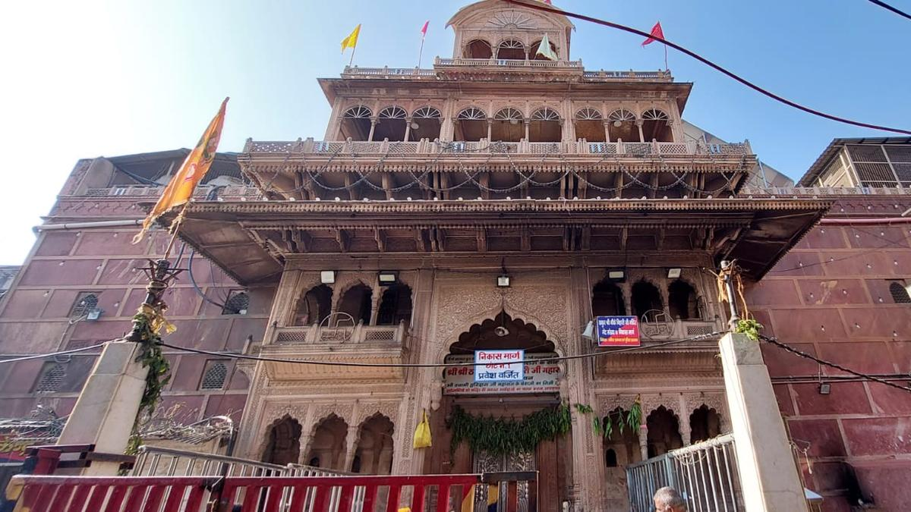
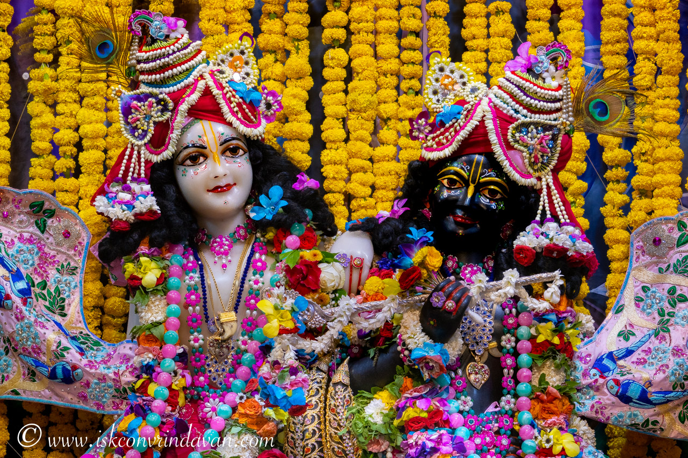
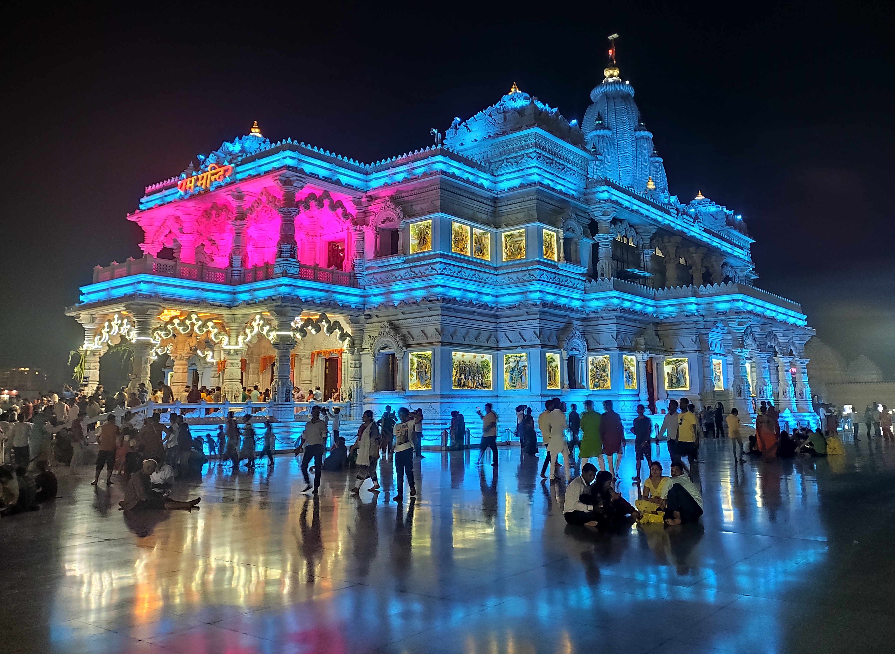
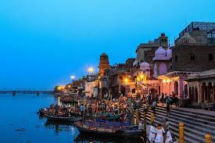
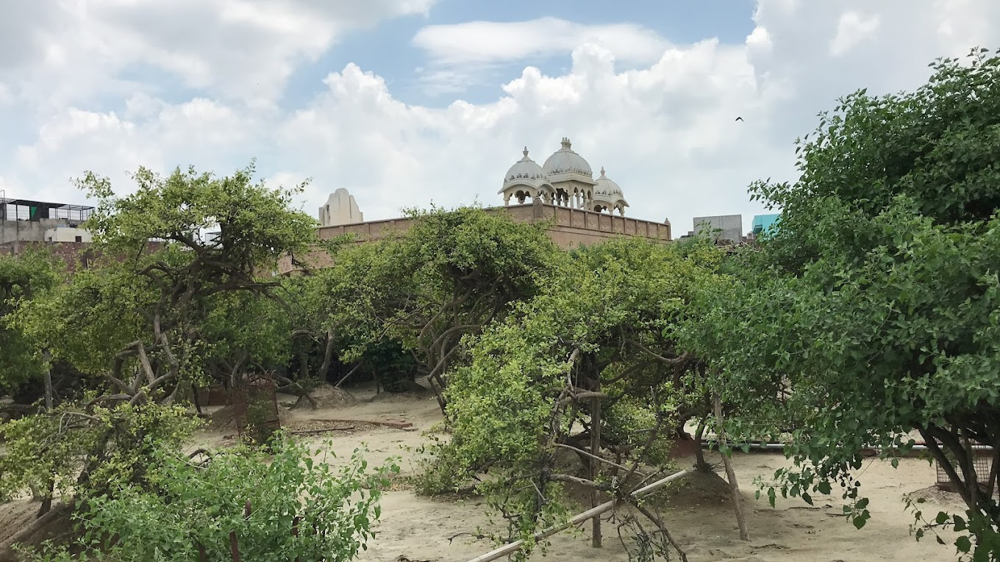
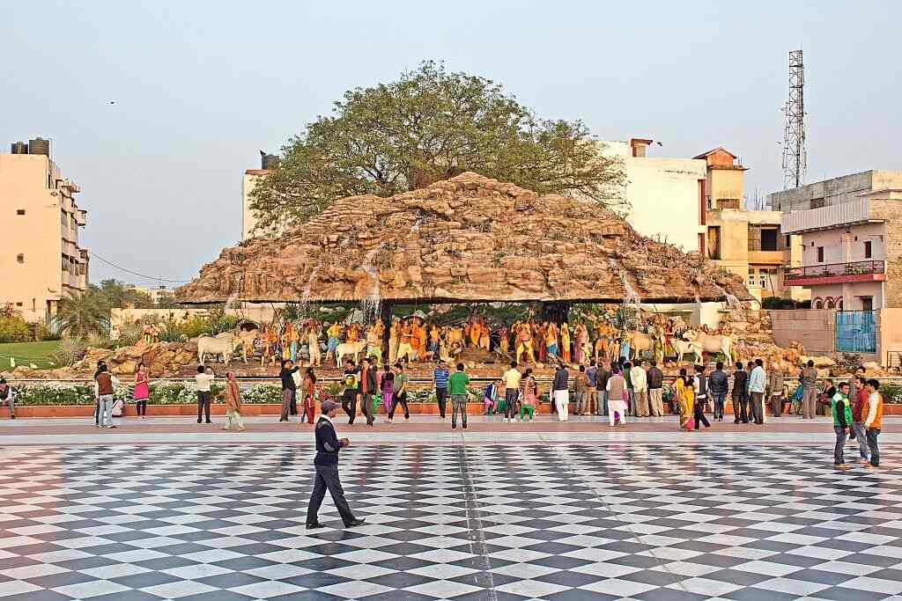

Dive into divine devotion with a tour of Mathura and Vrindavan, the twin towns brimming with tales of Lord Krishna’s life, majestic temples, serene ghats, and festive fervor.

Believed to be the birthplace of Lord Krishna, this sacred site is a major pilgrimage destination featuring temples, shrines, and deep spiritual resonance.

A grand temple in Mathura known for its intricate architecture and vibrant festivals dedicated to Lord Krishna, especially during Janmashtami and Holi.

One of Vrindavan’s most revered temples, it enshrines the idol of Banke Bihari Ji and attracts devotees with its lively chants and divine atmosphere.

A beautifully maintained temple dedicated to Lord Krishna and Radha, it is known for its serene ambience, kirtans, and spiritual teachings.

Constructed entirely from white marble, this temple displays Krishna’s life scenes through carvings and lights up magnificently in the evenings.

The main ghat in Mathura on the Yamuna River where Krishna is believed to have rested after defeating Kansa. Aarti here is truly mesmerizing.

A mysterious sacred forest where it’s believed Lord Krishna still performs Raas Leela. Entry is restricted after evening due to mystical beliefs.

Gokul is where Lord Krishna spent his early childhood. The town is filled with legends and spots like Raman Reti, perfect for spiritual reflection and devotion.